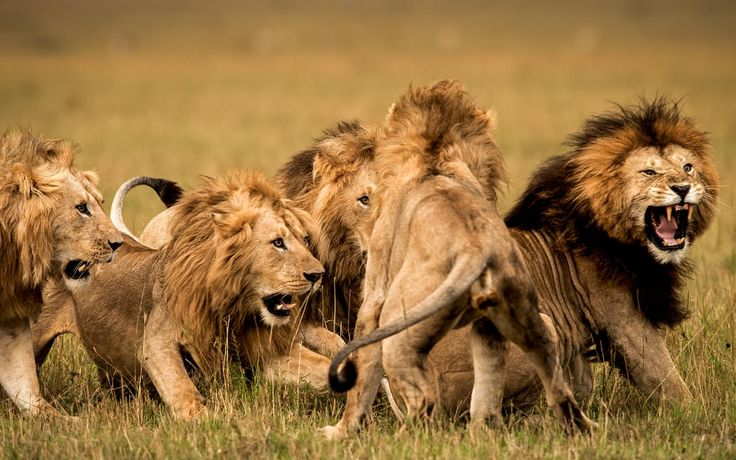

Pengertian Rantai Makanan – Manusia bukanlah satu-satunya mahkluk yang hidup di muka bumi ini. Ada banyak mahkluk hidup yang tumbuh dan berkembang berdampingan dengan manusia. Sebagai sesama mahkluk hidup yang menempati bumi, antara mahkluk hidup pasti terjadi interaksi.Restoran terbaik di dekat sini
Hubungan antar mahkluk hidup yang saling mempengaruhi ini akan menghasilkan sebuah ekosistem. Dalam lingkungan ekosistem, terdapat hubungan antara jaring-jaring makanan yang saling terkait.
Ekosistem juga dapat diartikan sebagai suatu sistem ekologi yang di dalamnya terdapat hubungan timbal balik antara keanekaragaman spesies dengan siklus materi serta arus energi melalui komponen-komponen yang terdapat di dalamnya.

A. Pengertian Rantai Makanan
Rantai makanan adalah serangkaian proses makan dan dimakan antara mahkluk hidup berdasar urutan tertentu yang terdapat peran produsen, konsumen dan decomposer (pengurai) untuk kelangsungan hidup.
Secara sederhana rantai makanan bisa dilihat secara runtut dari produsen, konsumen dan pengurai. Lain halnya dengan jaring-jaring makanan. Jaring-jaring makanan adalah gabungan dari rantai makanan yang saling terhubung, dan tumpang tindih dalam suatu ekosistem.
B. Fungsi Rantai / Jaring-jaring Makanan
Beberapa ilmuwan menyebut tingkatan setiap organisme dalam jaringan makanan dengan istilah tingkat trofik. Tingkat trofik tersebut menentukan bagaimana energi mengalir melalui ekosistem.
Berikut ini beberapa fungsi jarring-jaring makanan yang perlu kamu ketahui:
Menggambarkan interaksi langsung antar spesies yang ada pada ekosistem itu sendiri, sehingga hubungan antar spesies bisa dibedakan mana yang termasuk dalam spesies basal, spesies peralihan dan mana yang menjadi spesies predator puncak.
Sebagai penyederhana dalam memahami suatu hubungan antar spesies dan berfungsi dalam mempelajari kontrol bawah ke atas maupun kontrol atas ke bawah dalam suatu struktur komunitas.
Mempelajari kontrol atas ke bawah ataupun kontrol bawah ke atas didalam suatu struktur atau bentuk komunitas.
C. Proses Rantai Makanan
Proses makan dan dimakan dalam rantai makanan ini berlangsung secara terus menerus dengan perannya masing masing, seperti produser, konsumen, dan pengurai atau dekomposer.
Produsen adalah organisme yang mampu membuat makanannya sendiri.
Konsumen yaitu makhluk hidup yang bergantung pada makhluk lain karena dia tidak bisa memproduksi makanan sendiri seperti produsen.
Pengurai adalah organisme terakhir dalam rantai makanan. Karena pengurai merupakan organisme yang mampu mengubah zat organik menjadi zat anogarnik.